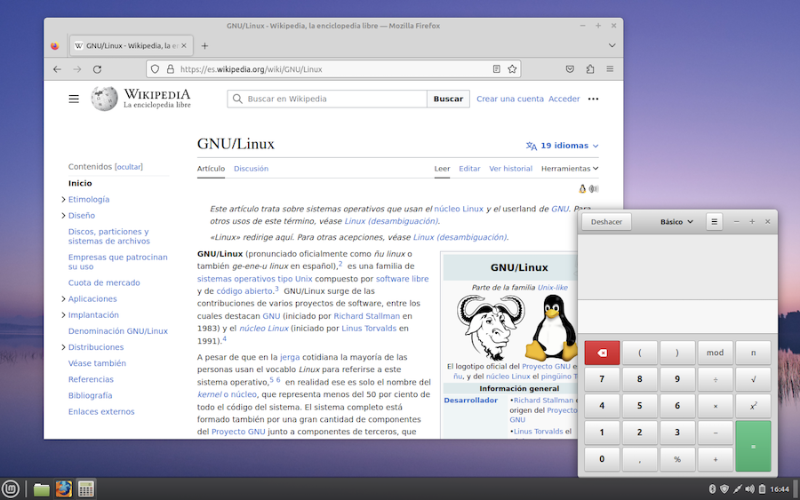
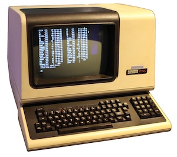

Sistemas operativos¶
Ya que vamos a instalar un sistema operativo Linux, comencemos por explorar algunos conceptos. 쯈ue es un sistema operativo? 쯏 un kernel? 쯈ue es un shell?
쯈ue es un sistema operativo?¶
Cuando adquirimos un nuevo ordenador, suele venir de serie con una colección de programas que podemos ampliar instalando nuevos paquetes de software. A grandes rasgos, estos programas preinstalados se dividen en:
- un programa de arranque, que es lo primero que se ejecuta cuando encendemos la computadora. El ordenador lo buscará automáticamente en el disco duro (o en el pendrive que tengamos conectado).
- un conjunto de programas básicos de gestión de recursos y procesos, conocido como el "kernel" o núcleo del sistema. Los pone en marcha el programa de arranque.
- un programa que nos permita interaccionar con la máquina, llamado "escritorio", también conocido como "shell". Esta palabra significa, en inglés, caparazón, y se llama así porque es la parte "visible" del sistema operativo, algo así como el envoltorio.
- programas para controlar accesos, usuarios, contraseñas, etc.
- todo ello acompañado del una colección de programas de utilidad: navegador web, explorador de ficheros, gestor de correo, etc.
Sin ánimo de ser dogmáticos, a todo este conjunto de programas básicos se le llama sistema operativo. En la siguiente imagen tenemos un ejemplo de escritorio:
- con dos programas ejecutándose en sendas ventanas
- al fondo, el programa de escritorio
- ejecutándose "en la sombra", y sin mostrar nada en pantalla, los programas de gestión de recursos del kernel.

El concepto de sistema operativo
Siendo puristas, la definición de sistema operativo debería limitarse al kernel, considerando todo lo demás como complementos. En este cuaderno dejaré ese debate aparte.
Monitorizando procesos¶
쮺uales son esas tareas de intendencia que se ejecutan en segundo plano? Muchos sistemas suelen contar con algún programa de utilidad que muestra la lista de procesos en ejecución. Este programa suele tener diferentes nombres, monitor del sistema, administrador de tareas... En Windows, por ejemplo, se inicia pulsando Shift+Ctrl+Esc.
En la siguiente imagen tenemos un monitor del sistema ejecutándose en una ventana sobre el escritorio de Linux. Podemos ver la lista de procesos, los recursos consumidos por cada uno, y en caso de que la máquina se quede bloqueada, detectar cual es el programa que está acaparando el tiempo de la CPU.
쯈uien ha dado la orden de ejecutar los programas de esta lista? La mayoría se ponen en marcha automáticamente al iniciar la computadora. Veamos algunos ejemplos.
-
Cuando navegamos por Internet, tenemos dos programas en ejecución:
- el navegador web, que descarga páginas y las muestra en pantalla
- el programa que gestiona la conexión a la red, que no se muestra en una ventana, pero se ejecuta en segundo plano y, dependiendo de como tengamos configurado nuestro sistema, muchas veces muestra un indicador en la barra superior o inferior de la pantalla, indicando la calidad de la señal wifi.
Este segundo programa sirve "de soporte" al navegador web, al correo electrónico, a los programas de chat, de descargas, y en resumen, a todos aquellos que hagan uso de la conexión a la red. Una computadora no mantiene varias conexiones en paralelo, una por cada aplicación. Todos los programas se apoyan en el servicio de conexión proporcionado por el sistema.
-
Veamos otro ejemplo. Supongamos que estamos trabajando con un procesador de textos y en un momento determinado pulsamos en el menú Archivo > Guardar. Para llevar a cabo esta operación hay que controlar que parte del disco está ocupada por otros archivos, si ya hay otro archivo con el mismo nombre, como están organizadas las carpetas, y un montón de cosas más. Todo este trabajo lo hace un programa de gestión de almacenamiento en disco, que se pone en marcha al iniciarse la computadora y se mantiene en ejecución hasta que la apaguemos. El procesador de textos, y el resto de programas en general, se benefician de los servicios que proporciona el programa de gestión de archivos.
-
Un tercer ejemplo. Estamos navegando por Internet, seleccionamos parte del contenido de una página web y hacemos una operación de copiar y pegar al procesador de textos. 쮺omo es posible que el navegador web y el editor de textos se pongan de acuerdo para colaborar entre ellos? Son programas independientes el uno del otro, creados por personas que seguramente no se conocen. Pero el sistema operativo de nuestro ordenador es quien se encarga de hacer de intermediario gracias a un programa especial llamado portapapeles, que está ejecutándose en la sombra en todo momento.
-
Otro ejemplo más. Imaginemos que estamos utilizando un programa que muestra un texto en la pantalla. Cada letra del alfabeto es un trazo formado por puntitos. Necesitamos un programa que se encargue de dibujar los caracteres de acuerdo a la resolución de pantalla que tengamos configurada, encargándose de las tareas de visualización y dando servicio a nuestras aplicaciones.
En todo momento tendremos unos cuantos procesos ejecutándose en segundo plano sin que seamos conscientes de ello: gestión de recursos, controladores de dispositivos, almacenamiento en discos, comunicaciones de red, e incluso algún que otro virus probablemente...
El Shell¶
En dos palabras, un shell es el programa que utilizamos para interaccionar con la computadora. En la prehistoria de la informática los ordenadores no contaban con pantallas. Los puestos de trabajo consistían en un teclado y una impresora:
El usuario tecleaba comandos a ejecutar, y el ordenador respondía mostrando la información en papel. Con el paso de los años, estas primitivas consolas fueron sustituidas por pantallas donde la información se mostraba en forma de texto, que se iba desplazando hacia arriba a medida que se llenaba la pantalla:

La década de 1980 fue testigo de la aparición de los primeros escritorios gráficos. En lugar de teclear comandos, había que pulsar con el ratón sobre los elementos de la pantalla:

A partir de ese momento se fue imponiendo el uso de shells cada vez más sofisticados. Actualmente se habla de usar shells gráficos o shells de texto. Los sistemas operativos modernos suelen incluir un programa llamado "Terminal", que simula un shell de texto en una ventana:
쮺omo funciona? Al iniciar el Terminal, se muestra un prompt que nos invita a teclear algún texto:
>
El prompt suele estar precedido por algo de información. Por ejemplo, en Windows se mostrará la carpeta actual:
C:\ >
La configuración del prompt depende del sistema operativo. En muchos sistemas Linux es frecuente utilizar el carácter $. Algunas veces puede ser otro carácter, como #:
$
Tras el prompt, teclearemos algún un comando, que se ejecutará al pulsar Enter. En un capítulo posterior haremos un repaso básico del funcionamiento del terminal de comandos en el sistema operativo Linux.
쯇ara que sirve el Terminal? El usuario medio de un ordenador doméstico lo utilizará en contadas ocasiones, pero hay situaciones en las que resulta de gran utilidad, especialmente para tareas de administración y configuración del sistema.
Sistemas operativos más populares¶
En la prehistoria de la informática, cada fabricante de ordenadores tenía su propio sistema operativo. Esto era un planteamiento bastante ineficiente, porque los programas que utilizamos se apoyan en los servicios proporcionados por el kernel, como ya hemos visto. En aquellos primeros años, esto suponía que si una empresa cambiaba de computadora y adquiría un nuevo modelo más avanzado de otra marca, tenía que prescindir de todos sus programas y volver a comenzar desde cero.
En la década de 1960 comenzaron a surgir algunas iniciativas para crear sistemas operativos universales, algo que, en la actualidad se encuentra bastante extendido. Hoy en día, dos de los sistemas más populares son "Windows" y "Android". Las ordenadores de la marca Apple tienen su propio sistema operativo, "MacOS".
En el mundo de los servidores corporativos, el sistema de referencia es "UNIX", que se remonta a la década de 1970. En los años noventa surgió una versión para ordenadores personales denominada "Linux", que hoy en día es desarrollada de forma comunitaria, y es el sistema preferido por los defensores del software libre. Incluso ha ido sustituyendo de forma progresiva a su antecesor Unix en muchos servidores.
Otra alternativa es "ChromeOS", diseñado por Google y orientado a máquinas donde las aplicaciones y los datos de los usuarios residan en la nube.
MS-DOS fue el sistema operativo de Microsoft en la década de 1980, superado en 1992 por el lanzamiento de Windows 3, y aparcado definitivamente en 1995 tras la presentación de Windows 95.
쮺uantos sistemas operativos existen? Considerando los de cierta relevancia, cientos. Véase lista en la wikipedia.
En este cuaderno describiremos la instalación de un sistema operativo Linux.